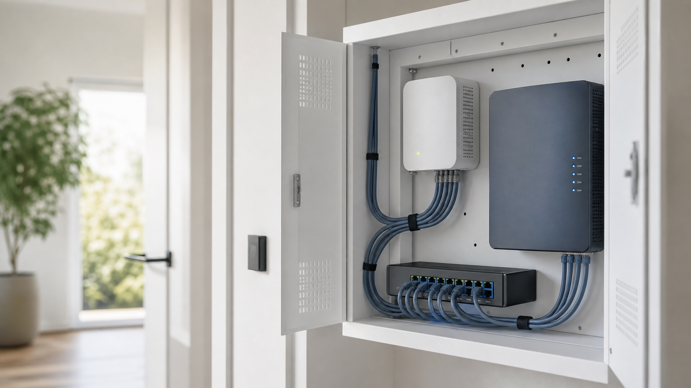
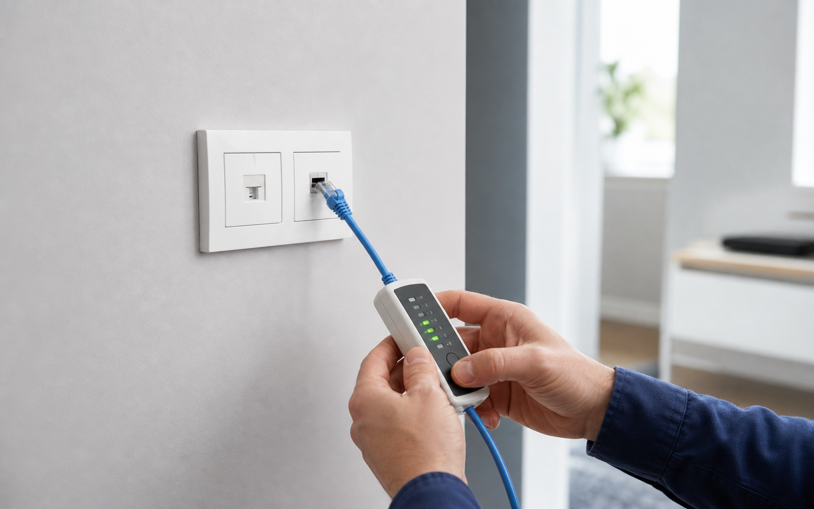

CONNECT CHECK
Für alle, die eine fundierte Einschätzung vor Bestellung oder Umsetzung brauchen.
ab 249 €
- Router, Glasfaser, LAN-Dosen und WLAN prüfen
- Verteiler oder Netzwerkschrank einschätzen
- Empfehlung und Umsetzungsplan
Transparente Preislogik
Klare Einstiegspakete, getrennte Materialkosten und ein verbindliches Angebot nach Besichtigung. So bleibt sichtbar, wofür Sie bezahlen: Planung, Einrichtung, Messung, Beschriftung und eine saubere Übergabe für Zuhause, kleines Büro, Praxis oder Kanzlei.
Pakete
Die Pakete sind bewusst als Orientierung aufgebaut. Der konkrete Umfang hängt von Objekt, vorhandenen Dosen, Netzwerkschrank, Glasfaseranschluss, WLAN-Zonen und Materialauswahl ab.
Für alle, die eine fundierte Einschätzung vor Bestellung oder Umsetzung brauchen.
Für Haus, größere Wohnung oder Sanierung, wenn LAN und WLAN als System funktionieren sollen.
Für schlechtes WLAN, Funklöcher oder den Umstieg von Repeatern auf Access Points.
Was hinter den Preisen steckt
Die Preise bilden nicht nur Geräte ab, sondern die saubere Arbeit dahinter: Bestand prüfen, Konzept erstellen, Komponenten einrichten, messen, beschriften und verständlich übergeben.
Router, Glasfaser, LAN-Dosen, WLAN-Situation und Verteiler werden geprüft, bevor Material empfohlen wird.

Switch, Router/ONT, PoE, Patchfeld und Access Points werden passend zum Objekt ausgewählt und verbunden.

Dosen, Ports und WLAN werden geprüft, beschriftet und als nachvollziehbare Heimnetz- oder Office-Mappe übergeben.
Zusatzmodule
LAN-Dosen aktivieren, Patchpanel/Switch/Router verbinden und Ports sauber beschriften.
Netzwerk für Doorbell, Kameras, Garage, Garten, PoE und Smart-Home-Anwendungen.
LAN, WLAN, Gäste-/Patienten-WLAN, Drucker/NAS und kleine Büro- oder Praxisbereiche einrichten.
Kleiner Einsatz oder klar eingrenzbare Fehlersuche, etwa LAN-Dose ohne Internet.
Preisbausteine
Nicht jedes Objekt braucht dieselben Geräte oder denselben Aufwand. Deshalb werden Arbeit, Material und Elektrikerleistungen nachvollziehbar getrennt.
Bestand, Verteiler, Dosen, Glasfaser und WLAN-Situation werden vor Ort geprüft.
Sie erhalten eine Empfehlung für Netzwerkschrank, Switch, Access Points und Umsetzung.
HomeWay, UniFi, Omada, Switch, Patchkabel und Kleinmaterial werden separat angeboten.
Einrichtung, Messung, Beschriftung, Dokumentation und Übergabe erfolgen nach Freigabe.
Detailübersicht
Diese Übersicht ersetzt kein Angebot, zeigt aber die typische Einordnung der Leistungen.
| Leistung | Typischer Einsatz | Einstieg |
|---|---|---|
| CONNECT CHECK | Vor-Ort-Analyse und Umsetzungsplan | ab 249 € |
| CONNECT ACTIVATE | LAN-Dosen aktivieren, Netzwerkschrank und Router verbinden | ab 790 € netto zzgl. Material |
| CONNECT WIFI PRO | WLAN-Analyse, Access Points, PoE, Einrichtung | ab 990 € netto zzgl. Material |
| CONNECT OFFICE | Kleines Büro, Praxis, Ordination oder Kanzlei mit LAN, WLAN, Gäste-WLAN und Doku | ab 1.490 € netto zzgl. Material |
| CONNECT FAMILY PRO | Hauslösung mit Netzwerkschrank, Switch, Router/ONT, APs und Doku | ab 2.990 € netto zzgl. Material |
| CONNECT SMART SECURITY | Doorbell, Kameras, Garage, Garten und PoE-Netzwerk | ab 690 € netto zzgl. Material |
| Zusatzarbeit | Änderungen, Erweiterungen, Sonderwünsche nach Freigabe | nach Aufwand |
Warum zuerst prüfen?
Ohne Blick auf Verteiler, Dosen, Routerstandort, Glasfaserabschluss und WLAN-Situation wären Fixpreise unseriös. Der CONNECT CHECK schafft eine klare Entscheidungsgrundlage, bevor Material bestellt oder ein Umsetzungstermin fixiert wird.
HomeWay, Switch, Access Points, Netzwerkschrank und Kleinmaterial werden nach Bedarf angeboten.
Verrohrung, Kabelzug, Unterputz und Strom erfolgen durch Elektriker oder Partnerbetrieb.
Nach dem Check erhalten Sie ein klares Angebot mit Umfang, Ausschlüssen und Optionen.
Der Check filtert offene Punkte und sorgt dafür, dass die Umsetzung fachlich sauber kalkuliert wird.
Beschreiben Sie kurz Ihr Objekt, die vorhandenen Dosen und den gewünschten Internet-/WLAN-Ausbau.